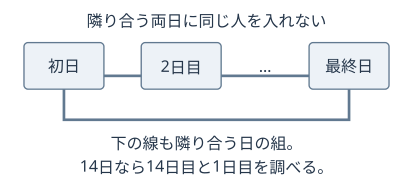

第07回の発展 二人の組・二種類の技能・周期勤務
第07回の内容から、関心に合わせて選ぶ三問である。必修演習を写し終えていなくても、各問の出発ファイルから始められる。三問は独立していて、どれから始めてもよい。全部を終えることは前提にしない。次の通常回はこの発展を前提にしないので、途中で止めても差し支えない。
出発点はそれぞれ違う。発展1と発展2は技能の条件を含まない必修1のモデルから始め、必修2で加えた技能の条件は引き継がない。発展3は入力も条件も新しく、一人二日までの上限も引き継がない。
発展1 同じ日に選べない二人
AさんとBさんは同じ作業の担当が重なると効率が落ちるため、同じ日には入れないことにした。二人とも休む日があってもよい。
五人・四日の入力を使う。発展1の出発モデルには技能なしの基本条件を記入済みである。作業1で同日勤務の禁止を加え、作業2で二人とも休む日を許しているか確認する。
条件と入力 人の集合 P はA〜Eの5人、日の集合 D は日1〜4である。x_{p,d} は人pが日dに勤務するなら1、休むなら0の決定変数、a_{p,d} は勤務できるなら1、できないなら0の入力を表す。r_d は日dの必要人数、u_p は人pの勤務日数の上限である。各日ちょうど2人を勤務可能な人から選び、各人の勤務は合計2日以下とする。
P=\{1,\ldots,5\}（A〜E）、D=\{1,\ldots,4\}、r=(2,2,2,2)、u=(2,2,2,2,2) とし、勤務可能性 a は A=1101、B=1011、C=0111、D=1110、E=1111 とする。
次の五つをすべて満たす行列 x を一つ求めよ。最後の一つが今回加える条件である。
x_{p,d}\in\{0,1\},\qquad \sum_{p\in P}x_{p,d}=r_d,\qquad x_{p,d}\le a_{p,d},\qquad \sum_{d\in D}x_{p,d}\le u_p,\qquad x_{A,d}+x_{B,d}\le1.
モデルでは work[p,d] が x_{p,d}、available[p,d] が a_{p,d}、required[d] が r_d、max_days[p] が u_p に対応する。PEOPLE=1..5 はA〜E、DAYS=1..4 は日1〜4の番号である。
要点 「同じ日に二人とも入らない」は x_{A,d}+x_{B,d}\le1 である。等号にすると「必ずどちらか一人が入る」という別の条件になり、二人とも休む日を禁じてしまう。
自己確認 出力で、AとBが同じ日に1になっていないことを確かめる。次の表は日1から順に勤務する二人を並べたもので、どちらも勤務可能性・各日2人・各人2日以下を満たす。
| 各日の担当 | 確認する点 | 期待 |
|---|---|---|
| AB／AD／CD／BC | 日1でAとBが同時に勤務する | 拒否 |
| DE／AC／BD／BC | AとBは同時に勤務せず、日1は二人とも休む | 受理 |
担当者なら constraint work[p,d] = 1;、それ以外なら constraint work[p,d] = 0; を全20マス分モデルへ一時追加し、一方ずつ固定して実行する。表を交換するとき・通常の求解へ戻るときは固定条件を外す。表をまとめて固定する書き方も使える。
発展2 二種類の技能を確保する
技能が二種類ある場合を考える。レジ締めができるのはAとB、発注ができるのはB・C・Dである。Bは両方できる。各日、それぞれの技能を持つ人を少なくとも一人ずつ入れたい。
五人・四日の勤務表に、二種類それぞれの技能人数の条件を加える。発展2の出発モデルに、基本入力と二種類の技能の入力を組み合わせる。基本条件と技能の入力宣言は記入済みである。作業1で技能別の下限を実装し、作業2でBの数え方と強めた下限を確認する。
条件と入力 人の集合 P はA〜Eの5人、日の集合 D は日1〜4である。x_{p,d} は人pが日dに勤務するなら1、休むなら0の決定変数、a_{p,d} は勤務できるなら1、できないなら0の入力を表す。r_d は日dの必要人数、u_p は人pの勤務日数の上限である。各日ちょうど2人を勤務可能な人から選び、各人の勤務は合計2日以下とする。
P=\{1,\ldots,5\}（A〜E）、D=\{1,\ldots,4\}、r=(2,2,2,2)、u=(2,2,2,2,2)、勤務可能性 a は A=1101、B=1011、C=0111、D=1110、E=1111。技能は S=\{1,2\} の二種類で、q_{p,s} は人 p が技能 s を持つなら1、持たないなら0とする。技能1はAとB、技能2はB・C・Dが持つ。
次の五つをすべて満たす行列 x を一つ求めよ。最後の一つが今回加える条件で、各技能について毎日一人以上を確保することを表す。
x_{p,d}\in\{0,1\},\qquad \sum_{p\in P}x_{p,d}=r_d,\qquad x_{p,d}\le a_{p,d},\qquad \sum_{d\in D}x_{p,d}\le u_p,\qquad \sum_{p\in P}q_{p,s}x_{p,d}\ge1.
モデルでは work[p,d] が x_{p,d}、available[p,d] が a_{p,d}、required[d] が r_d、max_days[p] が u_p に対応する。PEOPLE=1..5 はA〜E、DAYS=1..4 は日1〜4の番号である。技能は SKILLS=1..2 で、qualified[p,s] が q_{p,s}、skill_required[s,d] が技能sを持つ人の日dの必要人数である。skills.dzn の必要人数は両技能とも全日1である。
要点 Bが勤務する日は、レジ締めの人数にも発注の人数にも1として数えてよい。一人が二つの条件を同時に満たすことを禁じる必要はない。
自己確認 各技能・各日の人数を数え、いずれも1以上であることを確かめる。次に、入力の skill_required の第2行をすべて2にし、発注の条件を毎日二人へ強めるとどうなるかを試す。発注ができるのは三人で、一人二日までだから供給は六人日しかない。四日間で毎日二人なら八人日が必要になるので、解はなくなる。UNSATISFIABLEが返ることと、その理由を数で説明できるかを確かめよう。
発展3 周期的な勤務表と、作れる期間の限界
ここからは新しい問題である。八人を四人ずつ二つの群に分ける。全員が毎日勤務できる。各日、それぞれの群から一人ずつ、合わせて二人が勤務する。
この問題は必修や前の発展の条件を引き継がない。一人二日までの上限も使わない。
条件と入力 八人を G_1=\{1,2,3,4\}、G_2=\{5,6,7,8\} の二群に分ける。期間は D=\{1,\ldots,n\} で、まず n=14、次に n=16 とする。全員が毎日勤務できる。
人pが日dに勤務するなら x_{p,d}=1、休むなら0とする。次の四つをすべて満たす勤務表を一つ求めよ。モデルの work[p,d] がこの変数に対応する。
- 各日、それぞれの群からちょうど一人：\sum_{p\in G_1}x_{p,d}=1 かつ \sum_{p\in G_2}x_{p,d}=1
- 各人の勤務日数は3以上4以下：3\le\sum_{d\in D}x_{p,d}\le4
- 連続する二日に同じ人が勤務しない。最終日と初日も隣り合う日として扱う：x_{p,d}+x_{p,d\bmod n+1}\le1
- 群をまたぐ同じ二人の組は二度現れない：各 (p,q)\in G_1\times G_2 について、二人がそろって勤務する日は高々一日
最終日と初日を隣り合わせるのは、この勤務表を繰り返し使うためである。まず14日で作り、次に16日へ延ばす。次の図では、横に並べた日の列に加えて、下側の線でも隣接を表している。

周期勤務の出発モデルには宣言と日ごとの二人を表示する部分を用意した。14日の入力で、作業1に各群の人数と各人の日数、作業2に連続日と組の再登場の禁止を書く。その後、16日の入力へ切り替える。
d mod n_daysはdを日数nで割った余りである。d mod n_days + 1は、d=1なら2、d=nなら1となり、最終日から初日へ戻る添字になる。二人p・qがそろって勤務したかは、0/1の積work[p,d]*work[q,d]で表せる。両方1の場合だけ1、片方でも0なら0になるので、日について足すと同じ組の登場回数を数えられる。
まず14日のモデルを作って各人の日数まで数え、次に周期の境界と組の再登場を確認する。ここまでを一つの到達点とし、余裕があれば16日や独立検査へ進める。
別に検査の出発ファイルを使い、Pythonで各人の勤務日の集合や日付の差を調べる検査を作る。表の形式と各群一人の確認は記入済みで、作業1が勤務日数、作業2が連続日・周期境界・組の再登場である。モデルと同じ式を写すだけにせず、日ごとの組の列から別の表現で確かめる。valid_schedule(data, pairs) は、全条件を満たすとき True、一つでも破るとき False を返す。pairs は日順の二人組のリストで、例えば [1,5] は第1群の1番と第2群の5番の勤務を表す。人番号は1からで、日数分の組を並べる。
モデルの出力の先頭行にある二人組のJSON配列だけを pairs.json に保存する。---------- などの終了表示は含めない。14日なら下のコマンドを使い、16日なら入力を cycle-16.json へ交換する。cycle-14.json は群の人数・期間・勤務日数の下限と上限を持ち、関数の data に対応する。結果は VALID または INVALID と表示される。
python3 cycle-check-start.py cycle-14.json pairs.json確認例をまとめて渡す方法も勤務表の確認手引きにある。
要点 期間の長さには上限がある。一日に二人が勤務するので、n 日では 2n 人日が必要になる。八人が四日までしか勤務できないから、供給は32人日で、n\le16 となる。組の側から数えても、群をまたぐ組は 4\times4=16 通りしかなく、同じ組を二度使えないので n\le16 である。
自己確認 出力について、各群から毎日一人ずつか、各人の日数が3以上4以下か、連続する二日に同じ人がいないか、同じ組が二度現れないかを順に調べる。最終日と初日のまたぎも忘れずに見る。境界だけを壊した表と、同じ組が二度現れる表を自分で作り、検査が正しく拒否するかも確かめるとよい。
注意 17日以上の表は作れない。解が出ないことと、探索が終わらないことは違う。ソルバーがUNSATISFIABLEを返したのか、時間切れで止まったのかを区別して読む。上の数え方で上限を説明できるなら、探索を待たずに不可能だと言える。
配布の確認例には、成立する14日の表、境界だけを壊した表、同じ組だけが再登場する表がある。検査を記入したら期待判定と比べ、自分が得た16日の表も検査する。確認例が通ることだけで、任意の表に対する正しさを証明したとは言えない。